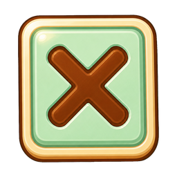
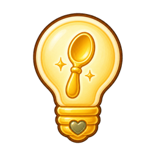
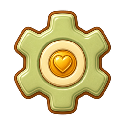

Sunny Spoon Studios Art Review
Puzzle Controls v1
Compare the authored art at 144px, control scale at 48px, and compact scale at 32px. Fill, Blank Check, and the corrected Undo now form the approved live puzzle shelf; Hint and Settings remain review-only.
Runtime3 promoted in v0.1.497
Manifest3 approved / history hidden
NextReview Hint and Settings in context
Blank Check

liveUndo v2
liveHint

candidateSettings

candidatePromotion checks
Meaning firstEvery object must communicate the existing action before decorative detail.
Compact clarity32px silhouettes must stay distinct without relying on labels.
Set continuityOutline weight, enamel depth, and heart/spoon motifs should feel related, not repetitive.
Safe integrationAccessible names and current puzzle behavior must remain unchanged.